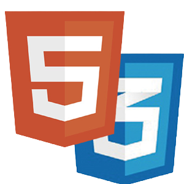

Sobre Mim

- Meu GitHub
- Meu Linkedin
- contatonkfa@gmail.com
- (44) 99766-6224
- Meu nome é Nicolas Klein e tenho 17 anos.
- Nasci e moro em Maringá-PR
- Possuo fluência em inglês
- Comecei a estudar programação em outubro de 2022.
- Estou finalizando o ensino médio e pretendo cursar Analise e Desenvolvimento de Sistemas.
- Faço projetos utilizando linguagens como: JavaScript, HTML, CSS e Python.
- Utilizo em meus projetos, tecnologias como Node.js e MongoDB.
- Meu principal hobby é jogar, meu gênero favorito é luta.
Habilidades
Python foi a primeira linguagem de programação que eu estudei. Consigo desenvolver interfaces gráficas e automações de atividades. Tenho conhecimento em bibliotecas como PyQT, PyAutoGui e Selenium.
HTML e CSS são as principais linguagens que eu utilizo para estruturar e estilizar meus sites. Utilizo ferramentas como o Figma para uma pré-estruturação dos meus sites.
JavaScript é a principal linguagem que estudo hoje em dia. Utilizo ela tanto em sites quanto integrada ao "Node.js" para aplicações backend. Tenho conhecimento em server e banco de dados, para isso, utilizo o Express juntamente ao MongoDB